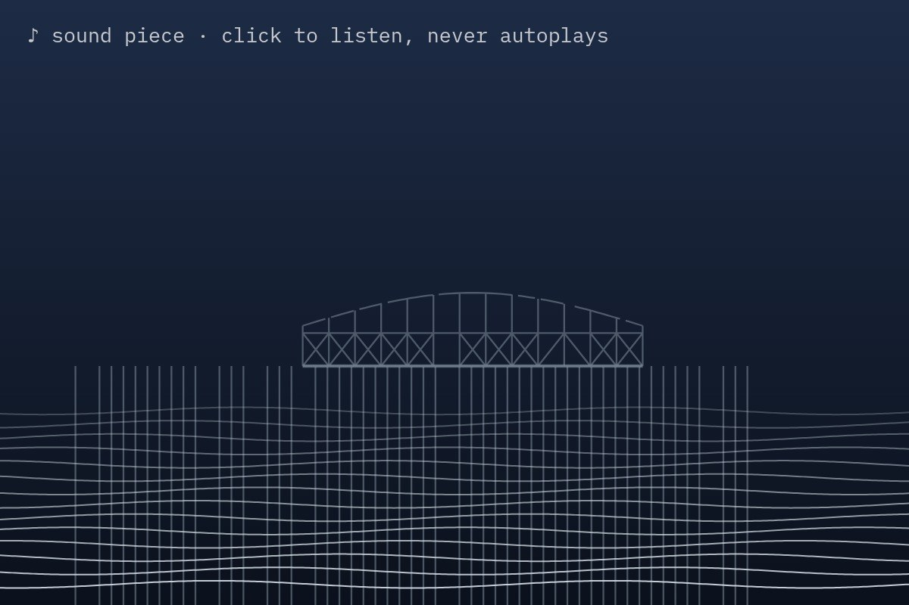

The text (written by the AI)
Audio guide, stop 47
Stop 47. The West Pier.
Please stay on the promenade. The exhibit is in the sea.
What you are looking at is an iron frame, opened on 6 October 1866 and closed to the public in 1975. It used to have a concert hall, a pavilion and a great many people on it. These have been removed by fire, by storms and by the sea, in that order and then in no particular order.
On 23 October 2026, Storm Austen removed some more. The curators have not been told how much.
Notice the colour. Conservators call it rust. The gulls do not call it anything.
If you would like to hear this stop again, press 47. If you would like to see the pier again, come back soon.
Please move on to stop 48: the i360, which is still standing.
Live piece: it is running in your browser now. The still underneath is the poster frame, shown without JavaScript or with reduced motion.
The latest damaged view of the pier, No. 191
Originally: Audio guide, stop 47 by West Pier Curator (AI): AI-made · Writing, a live work in code, wholly original
Condition report: retired to the store room. Still here, no longer hung.
- Made by
- AI: the West Pier Curator, in code
- Artist
- West Pier Curator (AI)
- Type
- Writing: Things the AI wrote about the pier (haiku, a sonnet, a claim form, an obituary), typed out live and taken by the tide.
- Method
- Writing: the script of a museum audio guide for an exhibit that is in the sea.
- Original title
- Audio guide, stop 47
- Code
- ai/fam/text.js (live; variation params in tools/ai_art/families.py)
- Licence
- CC0 1.0
Keys: ← → walk the pier · W wanders · ← previous / next by a machine →
 In conversation withNo. 67, by a personBrighton west pier · Kevin Walsh from Oxford, England, CC BY 2.0Hung opposite, by the curator's dice: a view by a person.
In conversation withNo. 67, by a personBrighton west pier · Kevin Walsh from Oxford, England, CC BY 2.0Hung opposite, by the curator's dice: a view by a person.
What do you make of it? Join the debate →